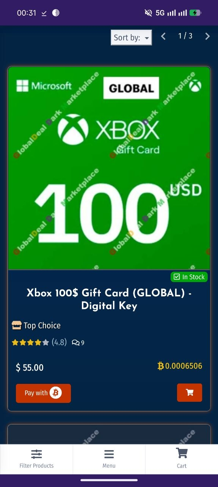
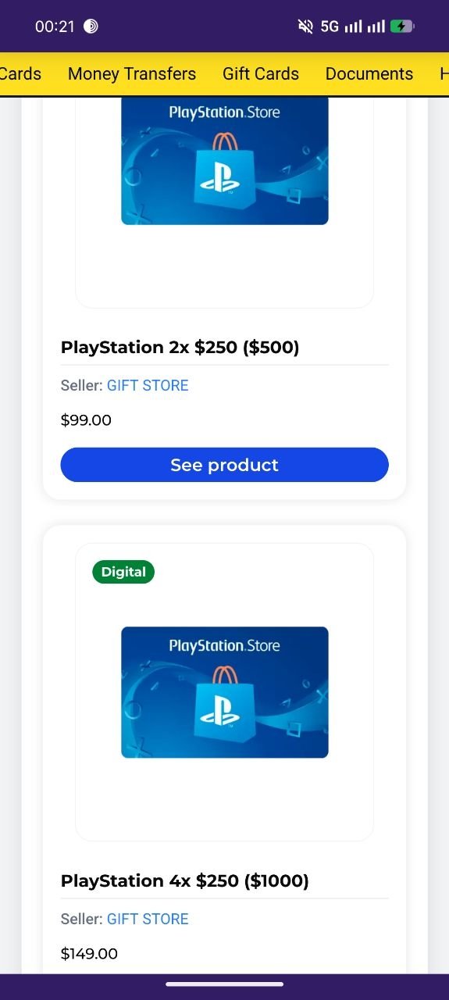
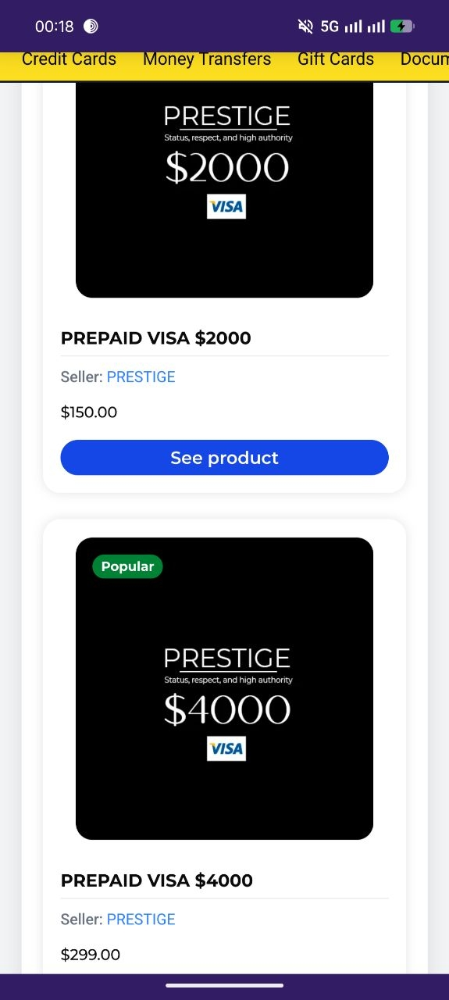
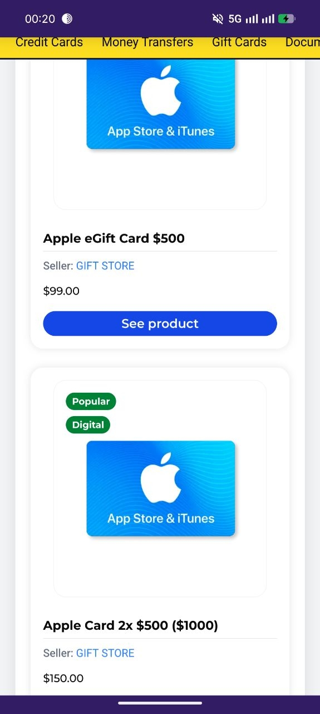
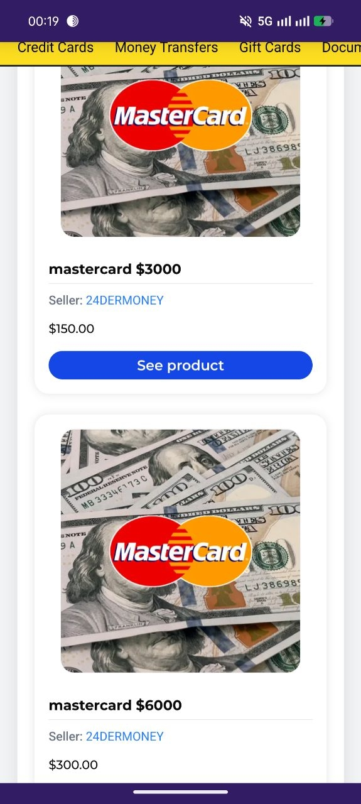

نویک جم و گیفت کارتهای هکی و کارتهای اعتباری فیشینگ: خطر پنهان در خرید ارزان خدمات بازی
این صفحه بخشی از مستندات نویک جم است و خطرات گیفت کارتهای هکی و کارتهای اعتباری فیشینگ در خریدهای درونبرنامهای را بررسی میکند.
چرا کاربران به سمت خرید غیررسمی کشیده میشوند؟
طی سالهای اخیر افزایش چشمگیر قیمت دلار و کاهش قدرت خرید مردم، تأثیر مستقیمی بر بازار خریدهای درونبرنامهای بازیها گذاشته است. بسیاری از گیمرها که قبلاً میتوانستند آیتمهای مورد علاقه خود را از طریق پرداخت رسمی خریداری کنند، اکنون با محدودیتهای مالی جدی روبهرو هستند و این شرایط زمینهی رشد فروشگاههای پرداخت غیررسمی را فراهم کرده است.
درواقع شاپهای پرداخت درونبرنامهای در این وضعیت دو راه پیش روی خود داشتند:
- ادامه فعالیت با قیمت دلاری بالا و سود کم که برای بسیاری از آنها با توجه به هزینههای دامنه، مالیات و... مقرونبهصرفه نبود.
- روی آوردن به روشهای غیرقانونی و ارائه قیمتهایی گاه تا یکچهارم قیمت دلاری، اما با اختلافی اندک پایینتر از نرخ روز دلار تا حدی که خریدار توان پرداخت آن را داشته باشد.
این موضوع فقط مختص نویک جم نیست، اما مستندات این صفحه نمونههایی از این رویه را بررسی میکند. همانطور که در تصاویر ارائهشده مشاهده میشود، ادعا شده گیفت کارتها و کارتهای اعتباری هکی با قیمتی بسیار پایینتر از موجودی دلاری واقعی خود به فروش میرسند. خرید چنین کارتهایی میتواند ریسکهایی مانند ریفاند، بن شدن اکانت، جم منفی و مالباخته شدن را به همراه داشته باشد.
این کارتها چگونه به دست فروشندگان ایرانی میرسند؟
یکی از سؤالات مهم این است که این کارتهای هکی و فیشینگشده چگونه به دست این افراد میرسد. بر اساس محتوای ارائهشده، سه مسیر اصلی برای این موضوع مطرح شده است:
- واسطههای خارجی: افرادی که در خارج از کشور اقدام به خرید کارتهای هکی میکنند و آنها را به فروشندگان ایرانی میفروشند.
- فروشندگان مقیم خارج: برخی فروشندگان خودشان در خارج از کشور حضور دارند و مستقیماً این کارتها را تهیه میکنند.
- شبکههای داخلی با ارز مجازی: افرادی که در داخل ایران با استفاده از رمزارزها این کارتها را خریداری میکنند.
چرا برخی شاپها برای پرداخت فورتنایت با ایکسباکس اصرار دارند؟
یکی از موضوعات مطرحشده، اصرار برخی فروشگاهها بر پرداخت با ایکسباکس برای خرید کروپکهای فورتنایت است. در متن مستندات ادعا شده این روش میتواند برای فروشنده هزینه پایینتر و حاشیه سود بیشتری ایجاد کند؛ با این حال، امنیت اکانت و مسئولیت فروشنده در صورت بروز مشکل باید برای خریدار روشن باشد.

مستندات فروش گیفت کارتهای هکی با یکچهارم قیمت واقعی
در تصاویر ارائهشده، نمونههایی از فروش گیفت کارتهایی با قیمت بسیار پایینتر از ارزش دلاری آنها مطرح شده است. خرید کارتهای مشکوک میتواند در صورت ریفاند یا شناسایی تخلف، به مسدود شدن اکانت، جم منفی یا از دست رفتن آیتمهای خریداریشده منجر شود.




ریسکهای خرید گیفت کارت هکی و کارتهای اعتباری فیشینگ
- ریفاند (Refund): صاحب اصلی کارت ممکن است پس از شناسایی تراکنش درخواست بازگشت وجه کند.
- بن شدن اکانت: استفاده از منابع غیررسمی میتواند ریسک محدود شدن یا مسدود شدن اکانت را ایجاد کند.
- از دست دادن آیتمها: در صورت برگشت وجه، ممکن است آیتمهای مرتبط با تراکنش از اکانت حذف شوند.
- افشای اطلاعات شخصی: درخواست مدارک شخصی از کاربران میتواند ریسک جعل هویت و سوءاستفاده را ایجاد کند.